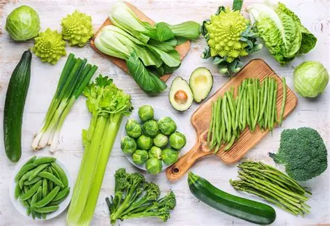

Chế độ ăn xanh (plant-based diet) không chỉ là một trào lưu sức khỏe nhất thời mà đang dần trở thành một phong cách sống bền vững. Việc giảm thiểu tiêu thụ thịt không chỉ mang lại lợi ích tuyệt vời cho cơ thể mà còn là hành động thiết thực để cứu lấy Trái Đất.
Lợi ích kép cho sức khỏe và tự nhiên
Nhiều nghiên cứu y khoa đã chỉ ra rằng, việc tăng cường tiêu thụ rau củ quả, các loại hạt và ngũ cốc nguyên cám giúp cơ thể phòng chống hiệu quả các bệnh lý mãn tính như tim mạch, huyết áp cao, tiểu đường tuýp 2 và béo phì. Chế độ ăn giàu chất xơ và vitamin tự nhiên giúp hệ tiêu hóa khỏe mạnh và tăng cường hệ miễn dịch.
Bên cạnh lợi ích sức khỏe, "ăn xanh" còn mang ý nghĩa to lớn đối với môi trường. Theo báo cáo của Liên Hợp Quốc, ngành chăn nuôi công nghiệp hiện đang chiếm tới 14,5% lượng khí thải nhà kính toàn cầu, đồng thời tiêu tốn một lượng khổng lồ nước ngọt và diện tích đất đai để trồng thức ăn cho gia súc.
Bắt đầu từ những thay đổi nhỏ nhất
Việc chuyển đổi sang chế độ ăn xanh nên diễn ra từ từ để cơ thể kịp thích nghi. Bạn không cần phải loại bỏ hoàn toàn thịt cá ra khỏi thực đơn ngay lập tức. Thay vào đó, hãy thử áp dụng chiến dịch "Ngày thứ Hai không thịt" (Meatless Monday), hoặc quy tắc "đĩa ăn 70/30" (70% thực vật, 30% đạm động vật).

Ưu tiên lựa chọn thực phẩm hữu cơ, đúng mùa và được nuôi trồng tại địa phương.
Hơn thế nữa, hãy ưu tiên tiêu thụ các loại thực phẩm được nuôi trồng tại địa phương (local food) và ăn theo mùa. Điều này không chỉ giúp bạn có được những bữa ăn tươi ngon, giàu dinh dưỡng nhất mà còn giảm thiểu đáng kể lượng khí thải carbon phát sinh trong quá trình vận chuyển thực phẩm chéo lục địa.